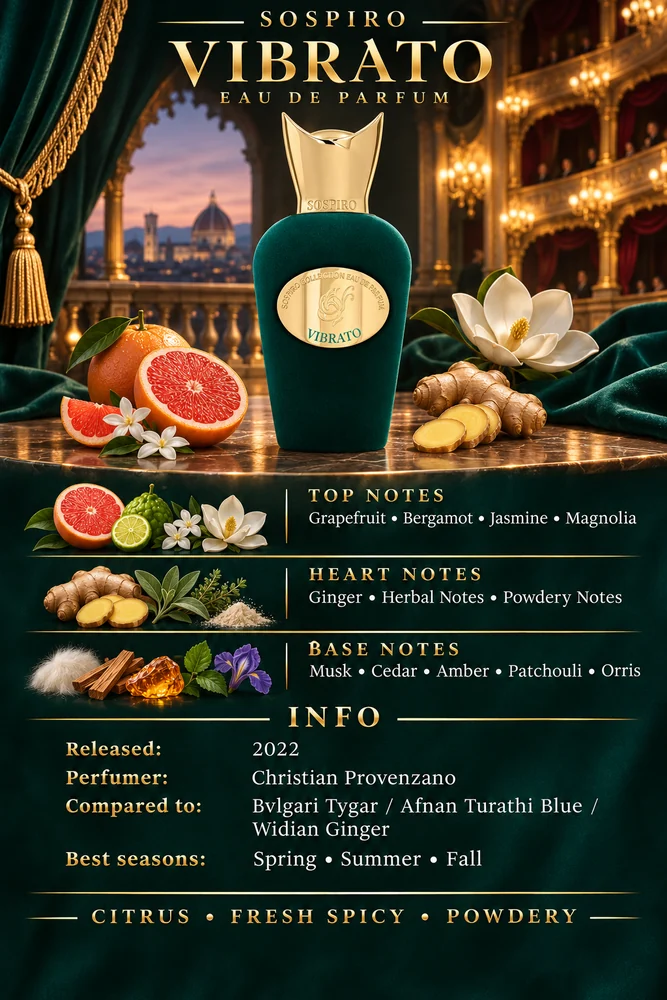

Sospiro
Vibrato Eau de Parfum
α Alpha Niche · Eau de Parfum · 2022 Future buy
Randy's rating—/10
Public rating9/10
Overall R—/28
Normalized N—
R and N are left blank until Randy has worn and rated it. How scores work
Notes
Top notes
- grapefruit
- bergamot
- jasmine
- magnolia
Heart notes
- ginger
- herbal notes
- powdery notes
Base notes
- musk
- cedar
- amber
- patchouli
- orris
Details
| House | Sospiro |
|---|---|
| Type | Niche · α Alpha |
| Concentration | Eau de Parfum |
| Released | 2022 |
| Perfumer | Christian Provenzano |
| Scent family | Musky & Powdery, Woody, Citrus |
| Best seasons | Spring, Summer, Fall |
| Similar to | Bvlgari Le Gemme Tygar Afnan Turathi Blue Widian Ginger |
Sources
Fragrantica 4.54/5 (about 9.1/10) from 7,164 votes; Parfumo 8.8/10 from 2,945 ratings (longevity 8.2, sillage 8.0). Vote-weighted and rounded to 9. Checked 2026-11-14.